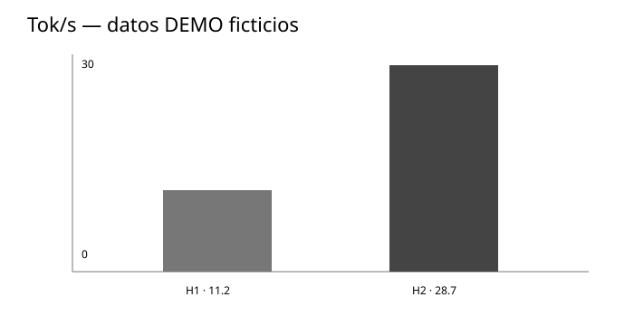
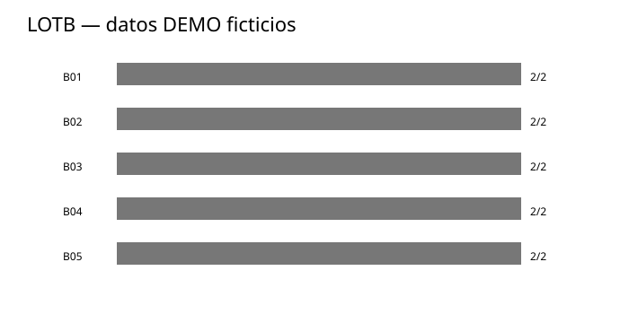
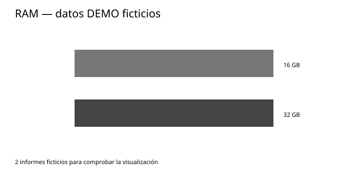
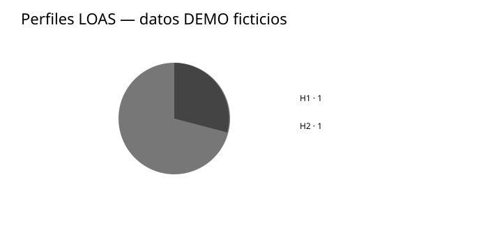

El proyecto
La idea en una pantalla
¿Qué intenta resolver?
LOAS investiga qué combinación de modelos, backends, harnesses y herramientas permite ejecutar IA agentic Libre/Open en hardware de consumo, priorizando Copyleft.
Idea central: un agente no existe para producir tokens; existe para completar objetivos.
Hardware
8 · 16 · 32 · 64 GB RAM
Intel i5/i7 o equivalentes
Con o sin GPU
Referencia
tok/s como umbral mínimo de usabilidad
Filosofía
Open primero.
Copyleft como prioridad.
Libre significa libertad, no precio.
Pila candidata
Buddy · Hermes
LangGraph · llama.cpp · GGUF
Buddy
Conocimiento controlado, independiente de la máquina
conocimiento + contexto→Harness / agente→Modelo→Herramientas / resultado
¿Cómo se usa?
Buddy actúa como capa de conocimiento y contexto controlados: qué sabe el agente, qué documentos puede utilizar, qué información conserva y cómo recuperarla durante una tarea. No es el modelo de inferencia.
¿Por qué importa?
Separamos lo que el sistema sabe de la pieza que genera los tokens. Así podemos cambiar el modelo o el backend sin tener que reconstruir el conocimiento.
El conocimiento sobrevive al cambio de pila
Hardware y software pueden evolucionar sin perder el trabajo acumulado
Máquina A
i5 + 16 GB
Modelo A
Backend A
Mejor hardware
Más RAM, GPU, otra CPU, nuevo modelo o backend.
Máquina B
i7 + 64 GB + GPU
Modelo B
Backend B
Lo que permanece
Conocimiento, estructura, documentos, criterios y memoria controlada.
metaLOAS registra por separado hardware, modelo, backend, harness y resultados para comparar las mismas tareas aunque cambie la plataforma.
Instalación
De cero a una primera ejecución
1 · Clonar
git clone https://github.com/robertosantosx2/LOAS.git cd LOAS
2 · Preparar Python
python3 --version python3 -m pip install matplotlib
3 · Publicar resultados
gh auth login
metaLOAS genera informes técnicos sin datos personales.
Formas de ejecución
Desde el diagnóstico hasta la evaluación agentiva
Diagnóstico
python3 scripts/metaloas-report.py
Hardware y software básico.
Publicar
python3 scripts/metaloas-report.py --model ~/modelo.gguf --publish
LOTB
python3 scripts/lotb-agentic-test.py
B01–B05 contra el endpoint local.
Estadísticas
python3 scripts/metaloas-stats.py
Agrega informes y gráficas.
Tiempo de tarea
La UX no se mide solo en tok/s
Escala UX
<5 s · excelente
5–10 s · muy buena
10–30 s · buena
30–60 s · aceptable
1–3 min · lenta
>3 min · no mínimamente usable
B01
Memoria / localidad
B02
Archivos
B03
Multietapa
B04
Recuperación ante fallo
B05
Coding local
Dashboard metaLOAS
Primeros datos de demostración — serán sustituidos por mediciones reales
Rendimiento

LOTB

RAM

Perfiles

| Perfil | RAM | CPU | GPU | Modelo | tok/s | Estado |
|---|---|---|---|---|---|---|
| H1 | 16 GB | Intel i5 (DEMO) | Sin GPU | Qwen3-8B-Q4_K_M-DEMO | 11.2 | DEMO |
| H2 | 32 GB | Intel i7 (DEMO) | RTX 4060 (DEMO) | Qwen3-8B-Q4_K_M-DEMO | 28.7 | DEMO |
metaLOAS
Contribuir sin publicar datos personales
Generar un informe
python3 scripts/metaloas-report.py --model ~/modelo.gguf --publish
Qué NO se publica
Nombres, emails, usuarios, hostnames identificables, seriales, UUID, MAC/IP, ubicación, rutas personales, credenciales o tokens.
Estados: reported → reproducible → verified. Los datos demo se eliminarán cuando existan 2 informes reales.